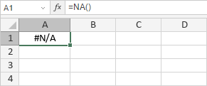

NA funkcija
NA funkcija je jedna od informativnih funkcija. Koristi se za vraćanje vrednosti greške #N/A. Ova funkcija ne zahteva argument.
Sintaksa
NA()
Napomene
Kako primeniti NA funkciju.
Primeri
Slika ispod prikazuje rezultat koji vraća NA funkcija.
